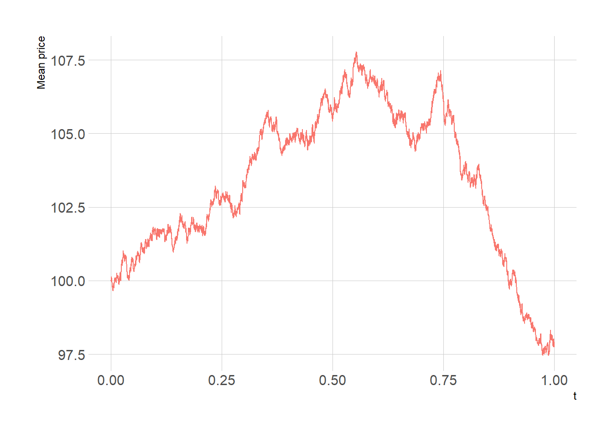

| Pays | 2002 | 2006 | 2010 | 2014 | 2018 | 2019 | 2020 | 2021 | Evolution 2002/2021 |
|---|---|---|---|---|---|---|---|---|---|
| Afrique du sud | 19 575 | 40 743 | 48 575 | 50 502 | 49 002 | 46 421 | 41 110 | 51 215 | 162% |
| Kenya | 369 | 575 | 998 | 1 766 | 2 098 | 2 229 | 2 120 | 2 424 | 557% |
| Nigéria | 388 | 712 | 1 340 | 1 792 | 1 168 | 1 393 | 1 213 | 1 581 | 307% |
| Namibie | 321 | 563 | 887 | 995 | 1 026 | 1 305 | 788 | 867 | 170% |
| Côte d'Ivoire | 177 | 288 | 398 | 457 | 629 | 671 | 778 | 806 | 355% |
| Ghana (1) | - | 165 | 306 | 385 | 605 | 610 | 669 | 789 | 862% |
| Maurice | 207 | 318 | 508 | 779 | 627 | 516 | 533 | 523 | 153% |
| Angola | 129 | 680 | 828 | 1 055 | 450 | 374 | 338 | 494 | 283% |
| Autres pays | 1 278 | 2 019 | 3 045 | 12 385 | 13 769 | 13 763 | 14 332 | 15 491 | 1112% |
| Total | 22 444 | 46 063 | 56 885 | 70 116 | 69 374 | 67 282 | 61 881 | 74 190 | 230% |
Rapport PFE
1 Introduction
Suite aux crises multiples qui ont secoué le monde de la finance et de l’assurance notamment celle de 2008, les autorités se sont rendu compte de l’insuffisance de la supervision prudentielle. Cette dernière s’est montré très chétive lors de la crise d’où la nécessité de mettre en place de nouvelles dispositions prudentielles plus robustes.
C’est dans ce contexte, à l’image de Bale 2 pour la finance, que la Solvabilté 2 voit le jour dans le milieu de l’assurance. Cette réforme réglementaire européenne vient renforcer la précédente en adaptant au mieux les exigences de fonds propres des compagnies d’assurances et de réassurances aux risques qu’elles encourent.
Les insuffisances évoquées n’ont pas épargné le cadre prudentiel marocain. C’est ainsi que l’Autorité de Contrôle des Assurances et de la Prévoyance Sociale (ACAPS1) a adopter la norme de Solvabilité Basé sur les Risques (SBR) afin de tenir compte de la diversités des risques encourues par les compagnies d’assurances et de réassurances marocaines. La SBR s’articule autour de trois piliers :
- Le pilier I regroupe les exigences quantitatives, à savoir les règles de valorisation des actifs et des passifs ainsi que les exigences de capital et leur mode de calcul;
- Le pilier II porte sur les exigences qualitatives et définit les règles de gouvernance et de gestion des risques, en l’occurrence l’évaluation interne des risques de la solvabilité;
- Le pilier III concerne, quant à lui, les obligations de reporting à l’Autorité et de diffusion de l’information au public.
2 Cadre réglementaire marocain
Le Maroc est l’un des acteurs majeurs de l’assurance en Afrique. Ses compagnies ne cessent de gagner du terrain dans les marchés de la sous-région notamment en Afrique de l’ouest. Selon un rapport de l’Atlas Mag2, le Maroc est classé 2ème en arfique et 49ème modial avec un chiffre d’affaire de 5 343 millions USD en 2021.
Le Royaume doit ce succès à la rigueur de sont dispositif prudentiel qui se consolide de plus en plus. La SBR vient en ce sens renforcer cette dynamique. Elle s’établit sur trois piliers :

3 Piliers 1: Exigences quantitatives
Sur les trois piliers de lq normes SBR, notre rapport de stage porte essentiellement sur le pilier 1. Ce dernier spécifie toutes les dipositions réglementaires afin de satisfaire les exigences quantitatives de la norme. La détermination du capital de solvabilité requis (\(CSR\)) et la fixation des Fonds propres nécessite l’établissement annuel d’un bilan prudentiel.
4 Valorisation de l’actif
4.1 Actions cotées à la bourse
Les actions cotées à la bourse de Casablanca sont valorisées conformément à la Spécification technique 7 de la Section 2 de la circulaire de l’ACAPS comme suit :
- Dernier coté avant la date d’inventaire
- Moyenne des cours côtés des trois derniers mois précédant la date d’inventaire si le volume ou la quantité journaliers moyens des transactions sur les 3 derniers mois précédant la date d’inventaire sont inférieurs aux seuils fixés par autorité
4.1.1 Modélisation du prix des actions
Le prix d’une action ou plus communément appelé cours d’une action représente le prix auquel elle est acheté ou vendue sur un marché boursier. Ce prix fluctue en fonction de l’offre et de la demande pour cette action, ainsi que de nombreux autres facteurs tels que les performances financières de l’entreprise, les conditions économiques générales et les évènements mondiaux. Autrement dit, le cours de l’action représente la valeur perçue de l’entreprise par les investisseurs à un moment.
Ainsi, si la valeur présente de l’action est une donnée du marché, sa valeur future quant à elle est aléatoire d’où la nécessité de sa modélisation.
4.1.1.1 Modèle de Black-Scholes
Le modèle de Black-Scholes modèle a été développé en 1973 par Fischer Black, Robert Merton et Myron Scholes, qui ont reçu le prix Nobel d’économie en 1997 pour leurs travaux. Ce modèle est l’un des concepts les plus importants dans la théorie de la finance modèle. Il permet dévaluer le prix d’une option européenne en fnction de son type et du prix de l’actif sous-jacent. Le modèle repose sur plusieurs hypothèses dont l’une d’entre elle est que le cours de l’actif sous jacent suit un mouvement géométrique avec une volatilité constante.
En termes mathématiques, le prix d’une action peut donc être représenté comme une fonction scalaire du temps actuel \(t\). Nous noterons cette fonction \(S(t)\). Notons qu’en termes techniques, \(S(t)\) est une série temporelle, qui bien qu’apparemment continue (avec continuité \(C[0]\)), est en réalité discontinue (sujette de sauts). De plus, ce n’est pas une fonction dont la dérivée première n’existe pas.
Nous allons modéliser \(S(t)\) comme une variable stochastique. Dans cette situation, nous sommes tenus de ne pas utiliser les outils standards de calcul (tels que les séries de Taylor, les dérivées, l’intégrale de Riemann), mais sont plutôt contraints d’utiliser les outils de calculs stochastiques (tels que le lemme d’Ito, la dérivée de Radon-Nykodym, Riemann -Stieltjes intégrale) pour faire avancer notre modélisation.
Dans ce contexte, le comportement de la variable \(S(t)\) peut être décrit pour une Equation Différentielle Stochastique (\(EDS\)). Dans le cas des actions, l’\(EDS\) standard utilisée pour modéliser la trajectoire du cours est appelé Mouvement Brownien Géométrique (\(GBM\) : Geometric Brownian Motion). Sous la mesure de probabilité dite réelle \(P\), le mouvement brownien géométrique (\(GBM\)) est formellement représenté en temps continu de la manière suivante : 3
\[ dS_t = \mu S_t dt + \sigma S_t dW^P_t \tag{1}\]
où \(\mu\) représente le drift, \(\sigma\) la volatilité et \(W^P\) est mouvement brownien standard sous la probabilité \(P\).
Cependant, dans la littérature, cette représentation n’est pas utilisée pour la valorisation des produit dérivés. Il est remplacé par la représentation suivante sous la mesure de probabilité neutre au risque \(\mathbb{Q}\):
\[ dS_t = r S_t dt + \sigma S_t dW^\mathbb{Q}_t \tag{2}\]
Dans l’Equation 2 précédente, nous avons remplacé \(\mu\) par le taux d’intérêt sans risque \(r\), \(\sigma\) est la volatilité et \(dW\) est l’incrément d’un processus de Wiener. L’équation 2 peut en outre être représentée comme suit :
\[ \frac{dS_t}{S_t} = r dt + \sigma dW^\mathbb{Q}_t \]
Dans cette dernière équation, nous pouvons identifier le terme \(\frac{dS_t}{S_t}\) du côté gauche de l’équation comme le rendement des capitaux propres. Ainsi, les deux termes du côté droit de l’équation sont un « terme de dérive » et un « terme de volatilité ». Chacun de ces termes est « mis à l’échelle » par les paramètres μ et σ , qui sont calibrés sur les prix actuels du marché des instruments négociés, tels que les options d’achat et de vente.
Intéressons nous aux solutions \((S_t)_{t\geq 0}\) de l’EDS Equation 2 qui peut être réécrite comme suit :
\[ S_t = x_0 + \int_{0}^{t}S_s(\mu dt + \sigma dW^\mathbb{P}_s)\;;\;\;avec\; S_0=x_0 \tag{3}\]
Puisque \(\mu\) et \(\sigma\) sont positifs, cela signifie que l’on cherche un processus adapté \((S_t)_{t\geq 0 }\) tel que les intégrales \(\int_0^t S_s\) et \(\int_0^t S_s dW^\mathbb{P}_s\) aient un sens, et qui vérifie l’Equation 3, pour chaque \(t\).
Commençons par un calcul formel en posant \(Y_t = log(S_t)\) où \(S_t\) est une solution de l’Equation 3. \(S_t\) est un processus d’Itô avec \(K_s = \mu S_s\) et \(H_s = \sigma S_s\). Appliquons la formule d’Itô à \(f(x) = log(x)\). On obtient, en supposant \(S_t\) positif:
\[ log(S_t) = log(S_0) + \int_{0}^{t} \frac{dS_s}{S_s}+\frac{1}{2} \int_{0}^{t}\frac{-1}{S_s^2}\sigma^2S_s^2 ds \] soit, en utilsant Equation 1
\[ Y_t = Y_0 + \int_0^t (\mu - \frac{\sigma^2}{2})ds + \int_0^t\sigma dW_s \],
puis
\[ Y_t = log(S_t) = log(S_0)+ (\mu - \frac{\sigma^2}{2})t + \sigma W_t \] ainsi :
\[ S_t = S_0 \exp((\mu - \frac{\sigma^2}{2})t + \sigma W_t) \tag{4}\] est solution de l’EDS.

5 La construction de la courbe des taux zéro-coupon :
Dans cette partie nous nous intéressons à la construction de la courbe des taux zéro-coupon dont nous avons besoin dans le reste de ce travaille afin d’actualiser les flux futurs entrant dans le calcul des différentes BEST ESTIMATE. Les taux Zéro Coupons sont extraite à partir des taux moyens pondérés des transactions des bons de trésor publiées par BANK AL MAGHRIB. Ces taux en fait, sont des taux monétaires pour les maturités inférieures ou égales à un an, alors qu’il représente un taux actuariel pour les maturités supérieures à un an, de plus ils ne sont disponibles que pour certaines maturités.
| Date d'échéance | Transaction | Taux moyen pondéré | Taux moyen pondéré (%) | Date de la valeur | Maturité |
|---|---|---|---|---|---|
| 17/01/2022 | 31,40 | 0.01530 | 1,530 % | 30/12/2021 | 0.050 |
| 14/02/2022 | 207,57 | 0.01530 | 1,530 % | 30/12/2021 | 0.128 |
| 09/03/2022 | 272,51 | 0.01530 | 1,530 % | 30/12/2021 | 0.192 |
| 18/04/2022 | 156,30 | 0.01538 | 1,538 % | 30/12/2021 | 0.303 |
| 20/06/2022 | 20,03 | 0.01570 | 1,570 % | 30/12/2021 | 0.478 |
| 18/07/2022 | 104,51 | 0.01560 | 1,560 % | 30/12/2021 | 0.556 |
| 19/09/2022 | 252,40 | 0.01564 | 1,564 % | 30/12/2021 | 0.731 |
| 17/10/2022 | 37,32 | 0.01570 | 1,570 % | 30/12/2021 | 0.808 |
| 14/11/2022 | 191,54 | 0.01581 | 1,581 % | 30/12/2021 | 0.886 |
| 20/03/2023 | 31,00 | 0.01650 | 1,650 % | 30/12/2021 | 1.236 |
Pour cette raison on va suivre les étapes suivantes pour la construction de la courbe des taux zéro-coupon :
- 1ere étape : Transformation des taux monétaires en taux actuariels.
- 2eme étape : Interpolation linéaire afin d’obtenir des taux actuariels pour des maturités pleines.
- 3eme étape : Calcule des taux zéro coupons à partir des taux actuariels des maturités pleines par la Méthode du Bootstrap.
- 4eme étape : Extrapolation de la courbe des taux zéro-coupon pour des maturités non observées lointaines par la méthode de Smith-Wilson
5.1 Transformation des taux monétaires en taux actuariels :
Cette étape consiste à transformer les taux monétaires à des taux actuariels en utilisant la relation suivante : \[ T_a=(1+\frac{n}{365}*T_m )^{\frac{365}{n}}-1 \] Avec :
\(T_a\) : Le taux actuariel.
\(T_m\) : Le taux monétaire.
\(n\) : Le nombre de jours entre la date de valeur et la date d’échéance.
\(\frac{365}{n}\) : La maturité
Après l’application de cette formule sur Les données de marché marocain (publie par la BAM), nous avons obtenu les résultats situés dans le tableau suivant :
| Maturité | Taux actuariel | Taux actuariel (%) |
|---|---|---|
| 0.050 | 0.01563 | 1,563% |
| 0.128 | 0.01562 | 1,562% |
| 0.192 | 0.01561 | 1,561% |
| 0.303 | 0.01568 | 1,568% |
| 0.478 | 0.01599 | 1,599% |
| 0.556 | 0.01587 | 1,587% |
| 0.731 | 0.01589 | 1,589% |
| 0.808 | 0.01594 | 1,594% |
| 0.886 | 0.01605 | 1,605% |
| 1.236 | 0.01650 | 1,65% |
5.2 Interpolation linéaire de la courbe des taux actuariels :
En réalité nous disposons que des taux actuariels des maturités ayant des valeurs décimales, le but de cette étape est donc la détermination des taux actuariels avec des maturités pleines en utilisant une interpolation linéaire.
Cette opération consiste à déterminer le \(DPL\) qui correspond au dernier point liquide. Il est déterminé de sorte que le volume cumulé des obligations dont les échéances sont supérieures au DPL est inférieur à \(6\%\) du volume total des transactions prises en compte pour la construction de la courbe des taux zéro-coupon. Il correspond aussi à dernière maturité observable.
La formule d’interpolation pour toute maturité \(j\) allant de \(1, 2,\dots, DPL\) est la suivante :
\[ t_j=t_i+\frac{t_{i+1 }-t_i}{n_{i+1 }-n_i} *(j-n_i ) \]
Avec :
\(t_j\) : Taux actuariels de maturité pleine j compris entre les maturités n_i et n_(i+1).
\(t_i\) : Taux actuariels de maturités n_i.
| Maturité | Taux actuariel | Taux actuariel (%) |
|---|---|---|
| 1 | 0.01620 | 1,62% |
| 2 | 0.01732 | 1,732% |
| 3 | 0.01823 | 1,823% |
| 4 | 0.01908 | 1,908% |
| 5 | 0.01976 | 1,976% |
| 6 | 0.02081 | 2,081% |
| 7 | 0.02117 | 2,117% |
| 8 | 0.02157 | 2,157% |
| 9 | 0.02247 | 2,247% |
| 10 | 0.02318 | 2,318% |
5.3 la méthode de Bootstrap:
Le Bootstrap est une technique de reconstitution de la courbe zéro-coupon pas à pas, en déterminant les taux zéro-coupon à partir des taux actuariels, en faisant l’hypothèse que le prix théorique d’une obligation correspond à la somme de ses flux futures actualisés aux taux zéro-coupon de l’échéance de chaque flux. Ainsi, on suppose que les prix des obligations des Bons du trésor sont au pair, c’est-à-dire que le prix d’émission des obligations des bons du trésor et leur valeur nominale sont égaux.
- Pour une maturité inferieure ou égale a un an :
Le taux zéro-coupon est donc le taux actuariel de même maturité. Car aucun coupon n’est payé avant l’échéance.
- Pour une maturité supérieure à un an :
Le taux zéro-coupon est calculé par la formule suivante : \[ R_n = \sqrt[n]{\frac{1+t_n}{1-t_n \times \sum_{i=1}^{n-1} \frac{1}{(1+R_i)^{i}}}} - 1 \]
En effet, on a supposé que le prix théorique d’une obligation correspond à la somme de ses flux futures actualisés aux taux zéro-coupon de l’échéance de chaque flux: \[ P = \frac{t_n * N }{(1+R_1)} + \frac{t_n * N }{(1+R_2)^2}+ \dots + \frac{N +t_n * N }{(1+R_n)^n} \]
-\(P\) : Prix d’émission du bon de trésor.
-\(N\) : Valeur Nominale du bon de trésor.
Et puisque nous avons supposé que les obligations des Bons du trésor sont émises au pair, c’est-à-dire que le prix d’émission des obligations des bons du trésor et leur valeur nominale sont égaux \((P = N)\), on trouve:
\[ 1 = \frac{t_n }{(1+R_1)} + \frac{t_n }{(1+R_2)^2}+ \dots + \frac{1+ t_n }{(1+R_n)^n} \] \[ \implies \frac{1+ t_n }{(1+R_n)^n} = 1- t_n * \sum_{i=1}^{n-1} \frac{1}{(1+R_i)^i} \] \[ \implies (1+R_n)^n = \frac{1+ t_n}{1- t_n * \sum_{i=1}^{n-1} \frac{1}{(1+R_i)^i}} \]
On en arrive à la conclusion :
\[ R_n = \sqrt[n]{\frac{1+t_n}{1-t_n * \sum_{i=1}^{n-1} \frac{1}{(1+R_i)^{i}}}} - 1 \]
| Maturité | Taux zéro coupon | Taux zéro coupon (%) |
|---|---|---|
| 1 | 0.01620 | 1,62% |
| 2 | 0.01733 | 1,733% |
| 3 | 0.01825 | 1,825% |
| 4 | 0.01912 | 1,912% |
| 5 | 0.01982 | 1,982% |
| 6 | 0.02092 | 2,092% |
| 7 | 0.02129 | 2,129% |
| 8 | 0.02171 | 2,171% |
| 9 | 0.02269 | 2,269% |
| 10 | 0.02346 | 2,346% |
5.4 Extrapolation de la courbe des taux zéro-coupon : méthode de Smith-Wilson
La méthode Smith-Wilson est une méthode d’extrapolation de la courbe des taux d’intérêt développée par les chercheurs Smith et Wilson en 1995, et est utilisée pour extrapoler les taux à long terme. Son principe est d’ajuster une courbe mathématique à la courbe des taux observée sur le marché, en utilisant une fonction spécifique appelée “fonction de Smith-Wilson”. Cette fonction est une combinaison de deux termes : le premier terme représente une fonction de décroissance exponentielle, qui est utilisée pour modéliser la partie courte de la courbe des taux ; le second terme est une fonction polynomiale qui est utilisée pour modéliser la partie longue de la courbe des taux.
Une fois que la fonction de Smith-Wilson a été ajustée à la courbe des taux, elle peut être utilisée pour extrapoler les taux pour des maturités plus longues que celles disponibles sur le marché. Cette extrapolation est possible car la fonction de Smith-Wilson est conçue pour s’adapter de manière continue à la fois à la partie courte et à la partie longue de la courbe des taux.
dans ce modèle le taux à terme à long terme est un paramètre d’entrée fixe qui ne varie pas dans le temps à mesure qu’évoluent les prix des obligations. Elle permet aux taux à terme à long terme de converger vers le taux « infini »(Ultimate Forward Rate) choisi et elle offre une base solide pour couvrir le risque de taux d’intérêt à long terme.
Les paramètres d’entrée sont les suivants :
- le UFR (Ultimate Forward Rate)
- \(\alpha\) la vitesse de convergence vers le UFR.
En fait, sur le marché on observe les prix zéro-coupons de différentes maturités \(u_1, u_2,\dots., u_N\) alors Smith-Wilson suppose que le facteur d’actualisation $P() $ est déterminé par:
\[ P(\tau) = e^{-UFR * \tau} + \sum_{j=1}^N \gamma_j * W(\tau , \mu_j) \]
Où:
\[ W(\tau , \mu_j) = e^{-UFR * (\tau + \mu_j )} * [ \alpha * min(\tau , \mu_j) - 0,5 *e^{-\alpha*max(\tau , \mu_j)}*(e^{\alpha*min(\tau , \mu_j)}- e^{-\alpha*max(\tau , \mu_j)} ) ] \]
Avec :
- \(W\) représente un ensemble de fonctions à noyau pour chaque prix d’obligation observable d’entrée.
- \(\alpha\) : la vitesse de convergence vers le UFR.
- \(N\): le nombre d’obligations ZC dont le prix est observésur le marché.
- \(u_j\): la j-ème maturité disponible. .
- \(\gamma_j\) : les inconnus à ajuster par rapport à la courbe des taux zéro-coupon disponible avant extrapolation.
Pour déterminer ces inconnus, on fixe d’abord \(UFR\) et \(\alpha\),le vecteur \(\gamma\) s’obtient comme solution d’un système d’équations linéaires définies par l’expression du prix de chaque obligation ZC considérée.
Soit :
\[ m_j = P(\mu_j) = e^{-UFR * \mu_j} + \sum_{j=1}^N \gamma_j * W(\tau , \mu_j) \]
Sous forme matricielle :
\[ m = P = µ + γ ∗ W ⇒ γ = W^{−1}(P − µ) \]
Avec:
\(m = (m_1, m_2,\dots, m_N)^T\)
\(P = (P(u_1) , P(u_2),\dots, P(u_N))^T\)
\(µ = (e^{−UFR∗u_1}, e^{−UFR∗u_2},\dots,e^{-UFR*u_N})^T\)
$$ W = \[\begin{bmatrix} W_{11} \; \; \;\dots &W_{1N} \\ \; \; \; . . . . . ..... \\ W_{N1} \; \; \;\dots &W_{NN} \end{bmatrix}\]\[ \] W{ij} = W (u_i, u_j) : i = 1 ,, N ;et ;j = 1 . . . N $$
Aprés la détermination des inconnus, on passe au calcul des prix zéro-coupon correspondants aux maturités pleines, et finalemet deduire les taux zéro-coupon correspondants à ces maturités par la relation suivante : \[ R(t) = (\frac{1}{P(t)})^{\frac{1}{t}} - 1 \]
6 Valorisation des provisions techniques prudentielles
Les provisions techniques prudentielles sont valorisées brutes de réassurance en considérant les contrats dont l’engagement de l’entreprise est en cours à la date d’inventaire. Les contrats d’assurance non-vie à tacite reconduction dont la date d’effet intervient postérieurement à la date d’inventaire et dont le préavis de résiliation a expiré à cette date sans qu’il y ait une demande de résiliation sont également pris en considération.
Elles sont évaluées comme suit : \[ PT = BE_{engagement} + BE_{fraisGestion} + MargeRisque \]
Avec :
\(PT\) : la provision technique
\(BE_{engagement}\) : La meilleure estimation des engagements correspond à la somme probabilisée et actualisée de flux de trésorerie futurs afférents aux engagements de l’entreprise d’assurances et de réassurance au titre des contrats souscrits et déterminée, selon la nature des opérations d’assurance
\(BE_{fraisGestion}\) : La meilleure estimation des frais de gestion correspond à la somme probabilisée et actualisée des flux de frais de gestion des contrats et déterminée, selon la nature des opérations d’assurance.
\(MargeRisque\) : La marge de risque correspond au coût d’immobilisation du capital de solvabilité requis afférent aux engagements garantis. Elle est calculée, séparément pour les engagements des opérations d’assurances vie et rentes découlant des opérations non vie ainsi que pour les engagements des opérations non vie.
6.1 Opérations d’assurance vie, décès ou capitalisation:
6.1.1 Meilleure estimations des engagements (\(BE_{engagement}\)):
Pour les opérations d’assurance vie, décès ou de capitalisation hors unités de compte, la meilleure estimation des engagements comprend la meilleure estimation des garanties probabilisées et les bénéfices discrétionnaires futurs. \[ _{vie}BE^{engagement} = BE_{garantie}^{prob} + BDF \]
Avec :
- \(BE_{garantie}^{prob}\): la meilleure estimation des garanties probabilisées.
- \(BDF\): les bénéfices discrétionnaires futurs.
6.1.1.1 Meilleure estimation des garanties probabilisées:
La meilleure estimation des garanties probabilisées est calculée garantie par garantie et tête par tête, en actualisant les flux de trésorerie futurs probabilisés, afférents aux engagements garantis à la date d’inventaire. Toutefois, l’entreprise d’assurances et de réassurance peut procéder à une agrégation en retenant des critères homogènes, notamment l’âge et ce, après accord de l’Autorité. \[ BE_{garantie}^{prob} = \sum\limits_{t=0}^{t=N}\frac{(CF^{Dec}_{t}-CF^{Enc}_{t})}{(1+r_t)^t} \] Avec :
\(CF^{Enc}_{t}\): Les encaissements à la date \(t\) qui correspondent aux engagements des assurés.
\(CF^{Déc}_{t}\): Les décaissements à la date \(t\). qui correspondent aux règlements de toutes prestations garanties au titre des contrats, y compris les rachats. Ils sont déterminés en tenant compte des engagements contractuels et en utilisant, le cas échéant, les bases techniques suivantes :
La table de mortalité: La table de mortalité TV 88-90 pour les assurances en cas de vie ou la table de mortalité TD 88-90 pour les assurances en cas de décès (prévues à l’annexe), auxquelles l’entreprise d’assurances et de réassurance peut substituer une table de mortalité d’expérience, matérialisant la mortalité propre à la population de ses assurés et ce, après accord de l’Autorité ;
La table de rachat en montant.
La table de résiliation.
Un taux de sortie en rente.
Remarque:
Les flux de trésorerie futurs probabilisés précités sont déterminés en considérant un horizon de projection suffisant pour la couverture de l’ensemble de la durée de vie des engagements à la date d’inventaire.
Exemple :
Si on prend l’exemple d’un contrat d’assurance-vie mixte4 de capital en cas de vie égale au capital en cas de décès \(K\). Soit \(q_{x+t}\) la probabilité qu’un individu d’âge \(x\) lors de la souscription décéde entre \(x+t\) et \(x+t+1\). On note \(NbPolice_t\) le nombre de police en début de période \(t\) et \(r_s\) le taux ZC. La prestation correspondante à ce contrat en date t : \[ _{décès}CF^{Déc}_{t} = K \times NbPolice_t \times q_{x+t} \times (1+r_t)^t \]
6.1.1.2 Bénéfices discrétionnaires futurs:
Les bénéfices discrétionnaires futurs sont évalués pour chaque ensemble homogène de contrats.
\[ BDF = PPB +\bar{r}^{PB}(SoldeT + SoldeF)\times\mathbf{1}_{(SoldeT + SoldeF) > 0} \] Avec :
\(PPB\) : Le montant de la provision pour participation aux bénéfices, évaluée à la valeur comptable;
\(SoldeT\) : Somme des soldes techniques.
\(SoldeF\) : Somme des soldes Financiers.
\(\bar{r}^{PB}\) : Le taux de participation aux bénéfices moyen servi aux assurés.
Le taux de participation aux bénéfices moyen servi aux assurés est calculé en considérant le rapport entre la somme des dotations au titre, des trois derniers exercices clos au moins, affectées à la provision pour participation aux bénéfices afférente aux opérations d’assurance vie, décès ou de capitalisation hors unités de compte et la somme des résultats techniques et financiers des dites opérations sur la même période.
En notation mathématique ça donne : \[ \bar{r}^{PB} = \frac{Dot_{\geq \text{3 exes clos} }}{RT + RF} \]
Avec :
- \(Dot_{\geq \text{3 exes clos} }\) : somme des dotations au titre, des trois derniers exercices clos au moins.
- \(RT\) :les résultats techniques.
- \(RF\) :les résultats financiers.
6.1.2 Meilleure estimation des frais de gestions (\(BE_{fraisGestion}\)):
La meilleure estimation des frais de gestion correspond à la somme actualisée des flux de frais de gestion futurs probabilisés. \[ BE_{fraisGestion} = \sum\limits_{t = 1}^{N} \frac{FG_t}{(1+r_t)^t} \]
Les frais de gestion futurs sont estimés sur la base d’une projection effectuée en considérant un horizon de projection suffisant pour la couverture de la durée de vie des engagements à la date d’inventaire. Ils sont déterminés pour chaque année de projection en multipliant le nombre de contrats par le montant de frais de gestion unitaire moyen. \[ FG_t = NbContrat_t \times \bar{FG}^{unitaire}_{t} \]
Avec :
- \(\bar{FG}^{unitaire}_{t}\) : Le montant de frais de gestion unitaire moyen est estimé en considérant la moyenne sur les trois derniers exercices clos des montants de frais de gestion unitaires.
- \(NbContrat_t\) : Le nombre de contrats précité est estimé par sous-catégories, compte tenu des bases techniques suivantes (La table de mortalité, La table de rachat en nombre, La table de résiliation)
- \(FG_t\) : Les frais de gestions.
Le montant de frais de gestion unitaire au titre de chaque exercice clos, correspond au rapport entre le montant de frais de gestion déterminé par sous-catégories et le nombre de contrats ou d’adhérents pour les contrats d’assurance de groupe, à l’ouverture de l’exercice clos considéré.
\[ \bar{FG}^{unitaire}_{t} = \frac{\overbrace{\frac{FG_{t-1}}{NbContrat_{t-1}}}^{\text{Frais de gestion unitaire en t-1}}+\frac{FG_{t-2}}{NbContrat_{t-2}}+\frac{FG_{t-3}}{NbContrat_{t-3}}}{3} \]
6.2 Rentes découlants des opérations non-vie:
La meilleure estimation des engagements pour les rentes découlant des opérations d’assurance non vie correspond à la meilleure estimation des garanties probabilisées déterminée avant. \[ BE_{rnv} = BE_{garantie}^{prob} \]
Avec :
- \(BE_{rnv}\) : la meilleure estimation rentes découlant des opérations d’assurance non vie.
- \(BE_{garantie}^{prob}\) : la meilleure estimation des garanties probabilisées.
La meilleure estimation des frais de gestion, pour les rentes découlant des opérations d’assurance non vie est déterminée de la meme façon comme avant.
6.3 Opérations d’assurance non vie hors rentes:
6.3.1 La meilleure estimation des engagements:
la meilleure estimation des engagements comprend la meilleure estimation des engagements pour sinistres nets de recours et la meilleure estimation des engagements pour primes. \[ _{nvhr}BE_{engagement}= _{nvhr}BE_{sinistres}^{eng} + _{nvhr}BE_{primes}^{eng} \]
6.3.1.1 La meilleure estimation des engagements pour primes(\(_{nvhr}BE_{primes}^{eng}\)):
La meilleure estimation des engagements pour primes correspond à la différence entre :
- La somme actualisée des flux de règlements futurs probabilisés nets de recours relatifs aux sinistres non encore survenus afférents aux contrats.
- Le montant des primes futures probabilisé et actualisé à la date d’inventaire, net des frais d’acquisition, afférentes aux contrats.
\[ _{nvhr}BE_{primes}^{eng} = \sum_{t \geq 1} \frac{\overline{FRFP_{t}}}{(1+ r_t)^t}- PFPA \]
avec:
- \(PFPA\) :Le montant des primes futures probabilisé et actualisé à la date d’inventaire, net des frais d’acquisition, afférentes aux contrats à tacite reconduction
- \(PFP\): Le montant des primes futures probabilisé.
- \(\overline{FRFP_{t}}\): La somme actualisée des flux de règlements futurs probabilisés nets de recours relatifs aux sinistres non encore survenus,telle que pour une année de projection donnée:
\[ \overline{FRFP_{t}} = Tx_{liquidation} * RS_{moyen} * (PPNA + PFP) \]
Où:
\(Tx_{liquidation}\): le taux de liquidation,il est estimé en fonction de la cadence de liquidation des engagements pour sinistres survenus.
\(RS_{moyen}\): le ratio de sinistralité moyen telle que: \[ RS_{moyen_t} = \frac{CU_{t} + CU_{t-1} + CU_{t-2}}{PA_{t} + PA_{t-1}+ PA_{t-2}} \]
\(CU\): [La charge ultime visée correspond, par exercice de survenance, à la somme des règlements cumulés et des règlements futurs au titre de l’année de survenance considérée.] représente la charge ultime.
\(PA\) les primes acquises.
Tell que :
\[ CU_t = RegCumules_t + RegFutures_t \]
- \(RegCumules_t\) : les règlements cumulés
- \(RegFutures_t\): les règlements futurs
- \(PPNA\): La provision pour primes non acquises.
- \(PFP\): Le montant des primes futures probabilisé.
6.3.1.2 La meilleure estimation des engagements pour sinistres nets (\(_{nvhr}BE_{sinistres}^{eng}\)):
La meilleure estimation des engagements pour sinistres nets de recours est déterminée en actualisant, les flux de règlements futurs probabilisés nets de recours relatifs aux sinistres survenus afférents aux contrats.
\[ _{nvhr}BE_{sinistres}^{eng} = \sum_{t \geq 1} \frac{FRFP_{t}}{(1+ r_t)^t} \] avec:
- \(FRFP_{t}\) : les flux de règlements futurs probabilisés nets de recours relatifs aux sinistres survenus, sont estimés sur la base d’un triangle de règlements par année de survenance net de recours conformément à la méthode l’annexe N°5 de la circulaire de l’ACAPS.
6.3.1.3 Méthode de calcul des flux de réglements futurs probabilisés pour les opérations non-vie hors rentes
6.3.1.4 Méthode des cadences – Chain Ladder
La méthode de Chain Ladder est celle spécifiée dans l’annexe 5 de la circulaire de l’\(ACAPS\) sur la \(SBR\). Les méthodes de cadences de règlement se basent sur le principe que la vitesse des règlements, en pourcentage de la charge finale de sinistres, est constante d’une année de survenance à l’autre. Ainsi les paiements réalisés permettent d’estimer les provisions pour sinistres à payer. Cette méthode est l’une des plus utilisée sur le marché. Elle tient cette célébrité de sa simplicité de calcul ainsi que de son ancienneté. Cette méthode est généralement utilisée pour les paiements cumulés, notés \(C_{i,j}\), où \(i\) représente l’exercice de survenance et \(j\) représente la période de développement.
| Exercice de survenance | 1er bilan | 2ème bilan | 3ème bilan | 4ème bilan |
|---|---|---|---|---|
| 1 | \(C_{1,1}\) | \(C_{1,2}\) | \(C_{1,3}\) | \(C_{1,4}\) |
| 2 | \(C_{2,1}\) | \(C_{2,2}\) | \(C_{2,3}\) | |
| 3 | \(C_{3,1}\) | \(C_{3,2}\) | ||
| 4 | \(C_{4,1}\) |
Conformément à la spécification technique de l’ACAPS, l’estimation des flux de règlements futurs probabilisés nets de recours relatifs aux sinistres survenus (\(FRFP\)) passe par les étapes citées ci-aprés.
Etape 1 : Constitution du triangle des règlements cumulés net de recours
Pour chaque année de survenance, on construit le triangle des règlements nets de recours à partir des données d’inventaire. La longueur d’historique des triangles des règlements doit correspondre à la nature du risque analysé et couvrir toute la durée de vie des engagements à la date d’inventaire. L’entreprise d’assurances et de réassurance doit expliquer pourquoi la méthode utilisée pour sa détermination est adaptée.
Etape 2 : Calcul des facteurs de développement individuels
Ils sont déterminés à partir du ttirangle de réglement cumulé par la formule suivante :
\[ f_{i,j} = \frac{C_{i,j+1}}{C_{i,j}} \;\text{pour }i\times j \in \{1,\dots,n\}\times \{1,\dots,n\} \]
Etape 3 : Vérification des hypothèses
Cette méthode reposes sur certaines hypothèses qui faudrait vérifier avant de poursuivre les calculs.
- Hypothèse Nº1 : Pour \(j\) allant de \(1\) à \(n\) , les facteurs de développement \(f_{i,j}\) sont indépendants de l’année desurvenance.
Les facteurs de développement individuels pour une année de développement j ne doivent pas s’écarter significativement de la moyenne des facteurs de développement individuels pour cette même année.
- Hypothèse Nº2 : L’hypothèse centrale de cette méthode est celle de la stabilité des cadences de paiements. Il existe des facteurs de développements \(f_0,\dots,f_{n-1}>0\) tels que \(\forall 0\leq i \leq n\) et \(\forall 0\leq j \leq n\), on a : \(\mathbb{E}[C_{i,j}/C_{i,0},\dots,C_{i,j-1}] = \mathbb{E}[C_{i,j}/C_{i,j-1}] = f_{j-1}C_{i,j-1}\).
Pour chaque année de développement \(j\), le nuage de points représentant les règlements cumulés de d’une année \(j+1\) par rapport aux règlements cumulés de l’année j doit être approché significativement par une droite.
Etape 4 : Calcul des facteurs de développement communs
Un facteur de développement commun est un coefficient qui permet de prédire les données futures manquantes à partir des données observées. La formule pour calculer les facteurs de développement communs est la suivante :
\[ \hat{f}_j = \frac{\sum_{i=0}^{n-j+1} C_{i,j+1}}{\sum_{i=0}^{n-j+1} C_{i,j}} \]
où \(f_j\) est le facteur de développement commun de l’année de développement \(j\) à \(j+1\), \(C_{i,j}\) est le règlement cumulé de l’année de survenance \(i\) à l’année de développement \(j\), et \(n\) est le nombre d’années de survenance
Etape 5 :Calcul des règlements cumulés futurs par année de survenance
Les règlements cumulés futurs sont estimés sur la base du triangle cumulé comme suit :
\[ \hat C_{i,j+1} = C_{i,n-i} \times \prod_{k=n-i}^{j}\hat f_k \]
où \(\hat C_{i,j+1}\) est le règlement cumulé futur de l’année de survenance \(i\), \(C_{i,n-i}\) est le règlement cumulé de l’année de survenance \(i\) à l’année de développement \(n-i\), \(\hat f_k\) est le facteur de développement commun de l’année de développement \(k\) à \(k+1\), et \(n\) est le nombre d’années de survenance.
La Provision pour Sinistre à Payer (\(PSAP\)) est déduite des \(\hat C_{i,j}\) et des \(C_{i,j}\) par la formule :
\[ PSAP = \sum\limits_{i = 0}^{n-1} (\hat C_{i,n} - C_{i,n-i} ) \]
Etape 6 : Constitution du triangle des règlements décumulés futurs par année de survenance
A la sortie de l’étape 5, nous diposerons d’une matrice de règlements cumulés. Cette étape consiste à la décumuler en utilisant la formule suivante :
\[ \hat R_{i,j} = \hat C_{i,j} - \hat C_{i,j-1} \;\; pour\;\; 1\leq i,j\leq n \] avec : \(\hat C_{i,j} = C_{i,j}\) lorsque \(i \leq j\).
Etape 7 : Calcul des flux de règlements futurs nets de recours (somme des diagonales) :
Les flux de règlements futurs nets correspondent à la somme des éléments de la diagonales du triangle décumulé inférieur obtenu à l’étape 6 : \[ FRFP = \hat R_p = \sum\limits_{i = p+1}^{n} \hat R_{i,n-i+p+1} \;\; avec \;\; 1 \leq p \leq n \]
Bien que la méthode de Chain Ladder soit celle préconisée par l’ACAPS dans le cadre de la \(SBR\), il existe sur marché d’autres méthodes de calcul des flux de règlements futurs.
6.3.1.5 Méthode des cadences avec inflation
Cette variante de la méthode des cadences tient compte de l’inflation de façon explicite. On calcule les paiements annuels en faisant la différence entre les colonnes successives du triangle des paiements cumulés. On ajuste ces paiements annuels en devises (MAD par exemple) constants en utilisant un indice d’inflation, puis on les cumule pour obtenir un triangle de montants cumulés en francs constants. On applique ensuite la méthode des cadences.
6.3.1.6 La méthode du ratio de paiement
Cette méthode a été à Sawkins 1975 est semblable à la méthode des cadences de développement avec inflation, sauf que les coefficients de passage \(\hat f_j\) sont calculés comme une moyenne de ratios et non comme un ratio de moyennes :
\[ \hat f_j = \frac{1}{n-j-1} \sum\limits_{i=0}^{n-j-1} \frac{C_{i,j+1}}{C_{i,j}} \]
6.3.1.7 La méthode du ratio de paiement
La méthode de Bornhuetter-Ferguson5 est une méthode de provisionnement qui repose sur l’idée que les pertes finales, attendues pour une année de survenance sont connues a priori et que le rythme des paiements est stable d’une année à l’autre. Elle combine les caractéristiques de la méthode des cadences et de la méthode du ratio de sinistralité attendu. Elle utilise des facteurs de développement pour estimer le pourcentage de pertes rapportées ou payées et ajoute les pertes attendues multipliées par le pourcentage de pertes non rapportées ou non payées. Elle est surtout utilisée quand les pertes sont de faible fréquence mais de forte gravité.
En résumé, elle suppose que l’on dispose d’une information externe sur la valeur probable finale du coût total des sinistres, que l’on appelle \(A\), et que l’on connaisse la proportion de sinistres attendus.6 Cette méthode se formule comme suit :
\[ L = D\times\frac{1}{LDF} + A(1- \frac{1}{LDF}) \]
avec :
- \(L\) : coût total estimé par cette méthode.
- \(D\) : coût total estimé en fonction des sinistres connues.
- \(A\) : coût total (connus + tardifs) attendu a priori.
- \(LDF\) : proportion de la liquidation déjà constatée
Exemple
Imaginons que le tarif ait été fixé en prévoyant une sinistralité totale de \(90\), que la part des sinistres connus au premier bilan soit habituellement de \(40\%\) et que la sinistralité observée au premier bilan soit de \(36\).
Si l’on pense que le tarif était bien établi, il n’y a pas lieu de changer la sinistralité totale et le montant des tardifs à provisionner est de \(90-36 = 54\).
Si l’on pense que la part des sinistres connus au premier bilan est un indicateur fiable, il y a lieu de considérer que la sinistralité totale sera de \(36/40\% = 90\) et de provisionner 54 de tardifs.
L’application de la méthode Bornhuetter-Ferguson donne un résultat intermédiaire calculé ainsi :
\(L = 90 \times 40\% + 90 \times 60\% = 90\), soit un volume de tardifs attendu de \(54\).
Plusieurs auteurs ont exprimé l’opinion que cette méthode est plus performante que la méthode des cadences de développement, en début de développement.
6.3.2 La meilleure estimation des frais de gestion:
la meilleure estimation des frais de gestion correspond à la somme actualisée des flux de frais de gestion futurs liés aux contrats. \[ _{nvhr}BE_{fraisGestion}= \sum_{t \geq 1} \frac{FFGF_t}{(1+r_t)^t} \]
avec:
- \(FFGF\): les flux de frais de gestion futurs. telle que: \[ FFGF = Tx_{fraisGestion_{moy}} * (_{nvhr}BE_{sinistres}^{eng} + _{nvhr}BE_{primes}^{eng}) \]
et:
- \(Tx_{frais gestion_{moy}}\) : Le taux de frais de gestion moyen,il est estimé, par sous-catégories d’opérations d’assurance, en considérant la moyenne sur les trois derniers exercices clos des taux de frais de gestion.
Donc:
\[ _{t}Tx_{fraisGestion_{moy}}= \frac{Tx_{fraisGestion_{t}} + Tx_{fraisGestion_{t-1}} + Tx_{fraisGestion_{t-2}}}{3} \]
ainsi que :
\[ Tx_{frais gestion_{t}} = \frac{FG}{_{nvhr}BE_{sinistres}^{eng}+ Reglements_{Clos}} \]
- \(FG\): le montant frais de gestion.
- \(Reglements_{Clos}\) : les règlements au titre de l’exercice clos.
6.4 Part des cessionnaires dans les provisions techniques prudentielles:
La part des cessionnaires dans les provisions techniques prudentielles est évaluée en considérant la différence entre d’une part, la meilleure estimation des engagements cédés et d’autre part, l’ajustement pour défaut de contrepartie.
\[ Part_{cess} = BE_{cedes}^{eng} - Ajust_{DC} \]
6.4.1 La meilleure estimation des engagements cédés (\(BE_{cedes}^{eng}\)):
Les opérations d’assurance vie, décès ou de capitalisation
la meilleure estimation des engagements cédés est évaluée en multipliant la meilleure estimation des engagements par le rapport entre d’une part, la part des cessionnaires dans les provisions mathématiques et dans les provisions pour capitaux, rentes et rachats à payer et d’autre part, la somme des provisions mathématiques , des provisions pour capitaux, rentes et rachats à payer bruts de réassurance.
\[ _{vie}BE_{cedes}^{eng} = taux_c \times _{vie}BE^{eng} \] Avec :
- \(taux_c\) (taux de cession): le rapport entre d’une part, la part des cessionnaires dans les provisions mathématiques et dans les provisions pour capitaux, rentes et rachats à payer et d’autre part, la somme des provisions mathématiques, des provisions pour capitaux, rentes et rachats à payer bruts de réassurance.
Les opérations non vie
Pour les opérations non vie, la meilleure estimation des engagements cédés correspond à la somme de la meilleure estimation des engagements pour sinistres cédés et de la meilleure estimation des engagements pour primes cédés.
\[ _{nvie}BE_{cedes}^{eng} =\; _{sinsitres}BE_{cedes}^{eng} + \; _{primes}BE_{cedes}^{eng} \] Avec :
\(_{sinsitres}BE_{cedes}^{eng} = taux_s \times BE_{sinsitres}^{eng}\) : La meilleure estimation des engagements pour sinistres cédés visée à la spécification technique 33 ci- dessus est évaluée en multipliant la meilleure estimation des engagements pour sinistres nets de recours visée à par (\(taux_s\)) le rapport entre la part des cessionnaires dans les provisions pour sinistres à payer et la provision pour sinistres à payer brute de réassurance.
\(_{primes}BE_{cedes}^{eng} = r^{primes}_{cession} \times BE_{primes}^{eng}\) : La meilleure estimation des engagements pour primes cédés visée est évaluée en multipliant la meilleure estimation des engagements pour primes visée par le taux de cession de primes. Le taux de cession (\(r^{primes}_{cession}\)) de primes précité correspond au rapport entre les primes brutes non vie (cessions) et les primes émises de l’exercice.
6.4.2 L’ajustement pour défaut de contrepartie:
L’ajustement pour défaut de contrepartie est déterminé en actualisant les flux d’ajustement futurs sur la base de la courbe des taux fixée par l’Autorité. Il correspond à la perte anticipée résultant de la défaillance probable du cessionnaire
Les flux d’ajustement futurs sont déterminés conformément à la méthode, telle que décrite à l’annexe N°6 de la circulaire de l’ACAPS que nous décrirons ci-après.
Etape Nº1: Calcul des meilleures estimations cédées projetées
Pour les opérations d’assurance non-vie hors rentes
Posons \((F_t)_{t>0}\) étant les flux de règlements futurs probabilisés. La meilleure estimation des engagements cédés au titre de l’année de projection \(ME_{engagements\;cédès\;i}\) est calculée comme suit :
\[ ME_{engagements\;cédès\;i} = (ME_{sinsitres\;i} \times ratio_{sinistres\;0} + ME_{primes\;i} \times ratio_{primes\;0}) \]
Où:
- \(ME_{sinsitres\;i} = \sum\limits_{t>i}\frac{F_t}{(1+r_t)^t}\), avec \((r_t)\) calculés à partir de la courbe des taux fixée par l’Autorité.
- \(ME_{primes\;i}\): correspond à la meilleure estimation des engagements pour primes projetée à la date i.
- Les termes \(ratio_{sinistres\;0}\) et \(ratio_{primes\;0}\) correspondent aux ratios de passage utilisés pour le calcul de la meilleure estimation des engagements pour sinistres cédés et pour primes cédés respectivement à la date d’inventaire.
Pour les opérations d’assurance vie, décès ou de capitalisation
La meilleure estimation des engagements cédès est déterminée par la formule suivante :
\[ ME_{engagements\;cédès\;i} = (MEGP_i + BDF_i)\times ratio_0 \]
Où : - \(MEGP_i = \sum\limits_{t>i}\frac{F_t}{(1+r_t)^t}\), avec \((r_t)\) calculés à partir de la courbe des taux fixée par l’Autorité et \((F_t)_{t>0}\) les flux de trésorerie futurs probabilisés. - \(BDF_i = \frac{MEGP_i}{MEGP_0}\times BDF_0 \times (1+r_i)^i\), avec \((r_t)\) calculés à partir de la courbe des taux fixée par l’Autorité. - \(BDF_0\) correspond aux bénéfices discrétionnaires futurs à la date d’inventaire. - Le terme \(ratio_0\) correspond au ratio de passage utilisé pour le calcul de la meilleure estimation des engagements cédés à la date d’inventaire.
Pour les rentes découlant des opérations non-vie
La meilleure estimation des engagements cédès au titre de l’année de projection correspond à :
\[ ME_{engagements\;cédès\;i} = MEGP_i\times ratio_0 \]
Où : - \(MEGP_i = \sum\limits_{t>i}\frac{F_t}{(1+r_t)^t}\), avec \((r_t)\) calculés à partir de la courbe des taux fixée par l’Autorité et \((F_t)_{t>0}\) les flux de trésorerie futurs probabilisés. - Le terme \(ratio_0\) correspond au ratio de passage utilisé pour le calcul de la meilleure estimation des engagements cédés à la date d’inventaire.
Etape Nº2: Calcul des flux d’ajustement projetés
Au titre de l’année de projection \(i\), le flux d’ajustement est calculé ainsi :
\[ Adj_i = \frac{1}{2}\times \max( ME_{engagements\;cédès\;i} - dépôt\; en \; espèces\; et\; en\; valeurs_1+ solde\; de \; réassurance_1;0)\times PD \times (1-PD)^{i-1} \] La probabilité de défaut annuelle “PD” du cessionnaire est établie conformément au tableau prévu au 2) de l’annexe n°12 de la circulaire qui correspond au premier Annexe de ce rapport.
Etape Nº3: Calcul de l’ajustement pour défaut de contrepartie
\[ Ajustement_{defaut} = \sum\limits_{i>0} \frac{Adj_i}{(1+r_i)^i} \] avec \((r_i)\) calculés à partir de la courbe des taux fixée par l’Autorité
7 Capital de Solvabilité Requis :
Le Capital de Solvabilité Requis (CSR) est une notion très importante dans les domaines d’assurance et de réassurance, il permet la garantie de tous les risques quantifiables auxquels les entreprises de ces domaines sont exposés. Le CSR correspond au capital dont a besoin une entreprise d’assurance ou de réassurance pour faire face à tous les risques qui peuvent survenir dans le futur et limiter la probabilité de ruine à 0,5%, c’est-à-dire à une seule occurrence tous les 200 ans.
Commençons d’abord par la définition des différents risques dans les secteurs d’assurance et de réassurance :
Risque de souscription : le risque de perte ou de changement défavorable de la situation financière, en raison d’hypothèses inadéquates en matière de sinistralité, de tarification et de provisionnement.
Risque de marché : le risque de perte ou de changement défavorable de la situation financière résultant, directement ou indirectement, de fluctuations affectant le niveau de la valeur des actifs, des passifs et des instruments financiers.
Risque de spread (marge de crédit) : le risque de perte ou de changement défavorable de la situation financière résultant des changements touchant les marges additionnelles par rapport aux taux de référence exigée par les investisseurs sur les emprunts émis par des entités autres que l’Etat.
Risque de contrepartie : le risque de perte ou de changement défavorable de la situation financière résultant d’un défaut de paiement d’une contrepartie ou d’une dégradation de sa qualité de crédit.
Risque opérationnel : le risque de perte ou de changement défavorable de la situation financière résultant de procédures internes, de membres du personnel, de systèmes inadéquats ou défaillants, ou d’événements extérieurs.
Risque de concentration : le risque de perte ou de changement défavorable de la situation financière résultant d’un manque de diversité des émetteurs auxquels l’entreprise d’assurances et de réassurance est exposée.
Selon le circulaire de l’ACAPS (l’Autorité de Contrôle des Assurances et de la Prévoyance Sociale) publié le premier Janvier 2020, Le capital de solvabilité requis est constitué de la somme des éléments suivants :
Le capital de solvabilité requis de base.
L’exigence de capital relative au risque opérationnel.
L’ajustement visant à tenir compte de la capacité d’absorption des pertes par les assurés.
L’ajustement visant à tenir compte de la capacité d’absorption des pertes par les impôts différés.
7.1 Le capital de solvabilité requis de base \(CSR_{base}\)
Le capital de solvabilité requis de base est le montant total des exigences de capitaux liées aux risques de marché, de concentration, de contrepartie, de souscription vie et de souscription non-vie et ce, après application des coefficients de corrélations. \[ CSR_{base} = \sqrt{\sum_{i,j\in Risk }(\rho_{i,j} * CSR_{i} * CSR_{j})} \] avec :
Risk \(\in\) {Marché, Concentration, Contrepartie, Souscription Vie, Souscription Non - Vie}
\(\rho\) : Coefficients de corrélations.
avec la matrice de corrélations suivante:
| Marché | Concentration | Contrepartie | Sousc. vie | Sousc. non-vie | |
|---|---|---|---|---|---|
| Marché | 1 | x | x | x | x |
| Concentration | x | 1 | x | x | x |
| Contrepartie | x | x | 1 | x | x |
| Sousc. vie | x | x | x | 1 | x |
| Sousc. non-vie | x | x | x | x | 1 |
7.1.1 EXIGENCE DE CAPITAL RELATIVE AUX RISQUES DE MARCHE \(CSR_{marche}\)
L’exigence de capital relative au risque de marché est le montant total des exigences de capitaux relatives aux sous-risques action, taux, immobilier, écart de taux et change et ce, après application des coefficients de corrélations. \[ CSR_{marche} = \sqrt{\sum_{i,j\in RM }(\rho_{i,j} * CSR_{i} * CSR_{j})} \] avec :
RM \(\in\) {action, taux, immobilier, écart de taux et change}
\(\rho\) : Coefficients de corrélations.
7.1.1.1 L’exigence de capital relative au risque action (\(CSR_{action}\))
L’exigence de capital relative au risque action est le montant de la perte de fonds propres résultant des baisses simultanées des valeurs des actions.
Les taux de baisse à appliquer pour le calcul de l’exigence précitée sont fixés pour les catégories d’actions suivantes:
• Actions cotées à long terme
• Autres actions cotées
• Actions non cotées à long terme
• Autres actions non cotées
• Entités d’infrastructures
\[ CSR_{action} = VM_{action}^{\text{cas de baisse}} - VM_{action} \]
7.1.1.2 L’exigence de capital relative au risque de taux (\(CSR_{taux}\))
L’exigence de capital relative au risque de taux, est le montant de la perte maximale de fonds propres qui résulterait de l’application de coefficients à la baisse ou à la hausse à la courbe des taux sur tout actif ou passif.
\[ CSR_{taux} = max (CSR_{taux-hausse}; CSR_{taux-baisse}) \] avec : \(CSR_{taux-i} = BE^{scénario-i} - BE\) \(i \in \{ hausse,baisse \}\)
7.1.1.3 L’exigence de capital relative au risque immobilier (\(CSR_{immobilier}\))
L’exigence de capital relative au risque immobilier est la perte de fonds propres due à une baisse de X% de la valeur des actifs immobiliers. \[ CSR_{immobilier} = BE_{eng}^{\text{baisse actifs immobiliers}} - BE_{eng} \]
7.1.1.4 L’exigence de capital relative au risque d’écart (\(CSR_{\text{Ecart_taux}}\))
L’exigence de capital relative au risque d’écart de taux est la perte de fonds propres due à l’application des taux de baisse à la valeur des titres de créances non émis ou non garantis par l’Etat.
Les taux de baisse à appliquer sont calculés en fonction de la duration et de la prime de risque à l’émission.
7.1.1.5 L’exigence de capital relative au sous-risque de change (\(CSR_{change}\))
L’exigence de capital relative au sous-risque de change correspond à la somme des exigences de capitaux pour risque de change pour chaque devise étrangère.
L’exigence de capital pour risque de change pour chaque devise étrangère correspond à la plus élevée des exigences de capitaux suivantes:
- l’exigence de capital pour risque d’augmentation de la valeur de la devise étrangère par rapport au dirham.
- l’exigence de capital pour risque de diminution de la valeur de la devise étrangère par rapport au dirham.
L’exigence de capital pour risques d’augmentation ou de diminution de la valeur de la devise étrangère par rapport au dirham est egale à la perte de fonds propres qui résulterait des scénarios d’augmentation ou de diminution, respectivement de \(X\%\) et \(X\%\), de la valeur de la devise étrangère par rapport au dirham.
\[ CSR_{change} = \sum_{i\in RC} CSR^{change}_{i} \] avec : \(RC\) = {risque de change pour chaque devise étrangère } et \[ CSR^{change}_{i} = max (CSR^{augmentation}_{i} ; CSR^{diminution}_{i}) \] - augmentation : le risque d’augmentation de la valeur de la devise étrangère par rapport au dirham. - diminution : le risque de diminution de la valeur de la devise étrangère par rapport au dirham.
tel que: \(CSR^{j}_{i} = BE^{\text{scénario j}} - BE\) \(j \in \{ augmentation ; diminution\}\)
7.1.2 Exigence de capital relative au risque de contrepartie (\(CSR_{contrepartie}\))
L’exigence de capital relative au risque de contrepartie est le montant total des exigences de capitaux relatives aux sous-risques de contrepartie de type 1 et de type 2 , une fois les coefficients de corrélation appliqués. \[ CSR_{contrepartie} = \sqrt{\sum_{i,j\in type}(\rho_{i,j}\times CSR_{contrepartie}^{i}\times CSR_{contrepartie}^{j})} \] avec : \(type \in \{type 1 ; type 2\}\)
7.1.2.1 Exigence de capital relative au risque de contrepartie de type 1:
L’exigence de capital relative au risque de contrepartie de type 1 est calculé en fonction des montants de pertes en cas de défaut des cessionnaires, des cédantes et des organismes dépositaires, selon la méthode suivante: ** voir l’annexe 9**
1ère étape: Calcul des pertes en cas de défaut des différentes contreparties \(i\).
- Pour un contrat de réassurance:
\[ LGD_{i} = max (X * (BE_{cédée_{i}} + \text{créances sur les cessionaires} + AR_i) - \text{Dépot en espèces ou en valeur};0) \] Où :
\(BE_{cédée_{i}}\) : La meilleure estimation des engagements cédés au cessionnaire ;
\(LGD_{i}\) : la perte en cas de défaut du cessionnaire i ;
\(\text{Depot en espèces ou en valeur}\) : le montant des dépôts en espèces ou en valeurs du cessionnaire i ;
\(AR_i\) : le montant d’atténuation du risque via les différents contrats de réassurance conclus avec le cessionnaire i. Il correspond à la différence entre les montants d’exigences de capital pour les risques de souscription vie et non-vie calculés compte non tenu de la réassurance et compte tenu de la réassurance.
Pour un contrat d’acceptation: \[ LGD_{i} = max (\text{Dépôts en espèces aupret de la cédante }_i + \text{Créance sur la cédante}_i - \text{Provision techniques}_i;0 ) \] Où :
\(LGD_{i}\): la perte en cas de défaut de la cédante i ;
\(\text{Dépôts en espèces aupret de la cédante }_i\) : le montant des dépôts en espèces déposés chez la cédante i ;
\(\text{Provision techniques}_i\) : le montant des provisions techniques acceptées avec la cédante i
Pour un avoir auprès d’un organisme dépositaire : \[ LGD_{i} = max (\text{Avoirs en banque}_i;0) \] Où :
-\(LGD_{i}\) : la perte en cas de défaut de la banque i ;
2ème étape: Sommation des LGD par échelle de notation :
Pour chaque échelle de notation \(k\) : \[ TLGD_{K} = \sum_{\text{Contrepartie faisant partie de la même échels de notation k}} LGD_k \]
3ème étape: Calcul des volumes suivants : \[ V_{inter} = \sum_{j,k} \frac{PD_k * (1-PD_k) * PD_j * (1-PD_j)}{X * (PD_j+PD_k)-PD_j*PD_k} * TLGD_j *TLGD_k \] \[ V_{inter} = \sum_{j} \frac{X* PD_j * (1-PD_j)}{X - PD_j} * \sum_{PD_j} LGD_{i}^{2} \] Où :
- \(PD_j\) et\(PD_k\): probabilités de défaut des contreparties j et k, établies conformément au tableau prévu au 2) de l’annexe n°12.
- \(TLGD_j\) et \(TLGD_k\) : somme des pertes en cas de défaut pour les contreparties dont la probabilité de défaut est, respectivement, de \(PD_j\) et\(PD_k\).
- \(\sum_{PD_j} LGD_{i}^{2}\) : somme couvrant toutes les expositions dont la probabilité de défaut est de \(PD_j\).
4ème étape: Calcul du de la façon suivante : \[ CSR_{contrepartie}^{type1} = \begin{cases} X * \sqrt{V_{inter} + V_{intra}}; \; & \text{si} \; \frac{\sqrt{V_{inter} + V_{intra}}}{\sum_i LGD_{i}} \leq x1 \\ X * \sqrt{V_{inter} + V_{intra}}; \; & \text{si} \; x1 \leq\frac{\sqrt{V_{inter} + V_{intra}}}{\sum_i LGD_{i}} \leq x2 \\ \sum_i LGD_{i} & \text{si} \; \frac{\sqrt{V_{inter} + V_{intra}}}{\sum_i LGD_{i}} \geq x2 \\ \end{cases} \]
7.1.2.2 Exigence de capital relative au risque de contrepartie de type 2:
L’exigence de capital relative au risque de contrepartie de type 2 est le montant total des exigences de capitaux relatives aux risque de contrepartie des assurés, des intermédiaires et des autres contreparties : \[ CSR_{contrepartie}^{type2} = CSR_{contrepartie}^{Assures} + CSR_{contrepartie}^{Intermediaires} + CSR_{contrepartie}^{autres-contreparties} \] avec :
L’exigence de capital relative au risque de contrepartie des assurés correspond à \(X\%\) des créances relatives aux primes ou cotisations qui demeurent impayées six (06) mois après la date de leur émission. Les créances précitées s’entendent nettes de provisions.
L’exigence de capital relative au risque de contrepartie des intermédiaires correspond à \(X\%\) des créances sur les intermédiaires d’assurances nettes de provisions.
L’exigence de capital relative au risque lié aux autres contreparties correspond à \(X\%\) de la somme des créances de l’actif circulant, autres que les créances vis-à-vis de l’Etat des contreparties visées aux 1) et 2) ci-dessus et les montants des chèques et valeurs à encaisser, nettes de provisions et qui demeurent impayées pendant une période supérieure à six (06) mois.
7.1.3 Exigence de capital relative au risque de concentration (\(CSR_{concentration}\))
L’exigence de capital relative au risque de concentration correspond à la perte des fonds propres due à la baisse des actifs associés aux ensembles d’émetteurs appartenant aux mêmes groupes. Elle correspond à la racine carrée de la somme des carrés des exigences de capitaux relatives au sous-risque de concentration relatifs aux différents groupes d’émetteurs. \[ CSR_{concentration} = \sqrt{\sum_i CSR_i^2} \] avec \(i \in \{ \text{Les sous-risques de concentration relatifs aux differents groupes d'emetteurs.}\}\)
Pour chaque groupe d’émetteurs, l’exigence de capital relative au risque de concentration egale à \(X\%\) de l’écart positif constaté entre le montant des placements de l’entreprise d’assurances et de réassurance, autres que les valeurs de l’Etat ou celles jouissant de sa garantie, relatifs à l’ensemble d’émetteurs appartenant au groupe précité et \(X\%\) du total de ses placements.
7.1.4 Exigence de capital relative au risque de souscription vie (\(_{souscription}CSR_{vie}\))
L’exigence de capital relative au risque de souscription vie est la somme total des exigences de capitaux relatives aux sous-risques de mortalité, de longévité, de rachat, de frais et de catastrophe, on appliquant les coefficients de corrélations entre ces sous-risques. \[ _{souscription}CSR_{vie} = \sqrt{\sum_{i,j} ( \rho_{i,j}\times CSR_i \times CSR_j)} \] avec : \(i,j \in \{\text{mortalite, longevite, rachat, frais catastrophe} \}\)
7.1.4.1 Exigence de capital pour risque de mortalité (\(CSR_{mortalite}\))
L’exigence de capital pour risque de mortalité correspond à la perte de fonds propres due à la hausse de \(X\%\) des taux de mortalité retenus pour le calcul des provisions techniques prudentielles.
La hausse des taux de mortalité précitée ne s’applique qu’aux contrats d’assurance pour lesquels une hausse des taux de mortalité entraîne une augmentation des provisions techniques prudentielles.
\[ CSR_{mortalite} = BE^{hausse} - BE \]
7.1.4.2 Exigence de capital pour risque de longévité (\(CSR_{longévité}\))
L’exigence de capital pour risque de longévité correspond à la perte de fonds propres qui résulterait de la baisse de \(X\%\) des taux de mortalité retenus pour le calcul des provisions techniques prudentielles.
La baisse des taux de mortalité précitée ne s’applique qu’aux contrats d’assurance pour lesquels une baisse des taux de mortalité entraîne une augmentation des provisions techniques prudentielles. \[ CSR_{longévité} = BE^{baisse} - BE \]
7.1.4.3 Exigence de capital pour risque de rachat (\(CSR_{rachat}\))
L’exigence de capital pour risque de rachat est correspond au maximun entre les exigences de capitaux suivantes:
- L’exigence de capital pour risque de hausse des taux de rachat : cette exigence signifie la perte de fonds propre qui résulterait d’une revalorisation des provisions techniques prudentielles suite à une hausse de \(X\%\) des taux de rachat retenus, en montant et en nombre. Toutefois, les taux de rachat augmentés de la hausse précitée ne doivent pas dépasser \(X\%\).
La hausse des taux de rachat précitée ne s’applique qu’aux contrats d’assurance pour lesquels une hausse des taux de rachat entraîne une augmentation des provisions techniques prudentielles.
- L’exigence de capital pour risque de baisse des taux de rachat : cette exigence correspond à la perte de fonds propre qui résulterait d’une revalorisation des provisions technique prudentielles due à une baisse de X% des taux de rachat retenus, en montant et en nombre.
La baisse des taux de rachat précitée ne s’applique qu’aux contrats d’assurance pour lesquels une baisse des taux de rachat entraîne une augmentation des provisions techniques prudentielles.
\[ CSR_{rachat} = max(CSR_{rachat}^{\text{hausse taux}}; CSR_{rachat}^{\text{baisse taux}}) \] avec : \[ CSR_{rachat}^{\text{hausse taux}} = BE_{rachat}^{\text{hausse taux}} - BE \] \[ CSR_{rachat}^{\text{baisse taux}} = BE_{rachat}^{\text{baisse taux}} - BE \]
7.1.4.4 Exigence de capital relative au risque de frais (\(CSR_{frais}\))
L’exigence de capital relative au risque de frais correspond à la perte de fonds propres due à des augmentations combinées de :
- \(X%\) du montant de frais de gestion unitaire moyen retenu pour le calcul des provisions techniques prudentielles des opérations d’assurance vie, décès ou de capitalisation et des rentes découlant des opérations non-vie et ce, par sous-catégorie;
- \(X%\) par année de projection du montant de frais de gestion unitaire moyen précité. \[ CSR_{frais} = BE_{frais}^{\text{chocé}} - BE_{frais} \]
7.1.4.5 Exigence de capital relative au risque de catastrophe (\(CSR_{catastrophe}\))
L’exigence de capital relative au risque de catastrophe vie correspond à l’application d’un coefficient de \(X\%\) aux montants des capitaux sous risque relatifs aux garanties en cas de décès nets de réassurance.
7.1.5 Exigence de capital relative au risque de souscription non vie (\(_{souscription}CSR_{non-vie}\))
L’exigence de capital relative au risque de souscription non-vie est la somme totale des exigences de capitaux relatives aux , une fois les coefficients de corrélation appliqués..
\[ _{souscription}CSR_{non-vie} = \sqrt{\sum_{i,j} ( \rho_{i,j} \times CSR_i \times CSR_j)} \]
avec : \(i,j \in \{ \text{primes, provisions, catastrophe} \}\) et \(\rho\) es le coefficient de corrélation.
7.1.5.1 Exigence de capital relative au sous-risque de primes (\(CSR_{primes}\))
L’exigence de capital relative au sous-risque de primes est le montant total des exigences de capitaux relatives aux sous-risques de primes par sous-catégorie et ce, après application des coefficients de corrélations. \[ CSR_{primes} = \sqrt{\sum_{i,j} ( \rho_{i,j}* CSR_i * CSR_j)} \] avec : \(i,j \in \{ \text{Les sous-risques de primes par sous-categorie }\}\) et \(\rho\) es le coefficient de corrélation entre les sous-catégories des sous-risques de primes.
Pour chaque sous-catégorie, l’exigence de capital afférente au sous risque de primes est égale à X fois le produit de l’écart-type de primes et du montant des primes acquises augmenté de la provision pour primes non-acquises nettes de réassurance au titre de l’exercice inventorié. \[ CSR_{sous-categorie}^{primes} = X * \sigma_{primes} * BE_{primes} \]
avec : \(BE_{primes} = Primes_{acquises}^{nettes} + Provision_{primes_{non-acquise}}^{nettes}\)
7.1.5.2 Exigence de capital relative au sous-risque de provisions (\(CSR_{provisions}\))
L’exigence de capital relative au sous-risque de provisions est la somme total des exigences de capitaux relatives aux sous-risques de provision par sous-catégorie, on prenant on considration les coefficients de correlation entre les sous-risques. \[ CSR_{provisions} = \sqrt{\sum_{i,j} ( \rho_{i,j}* CSR_i * CSR_j)} \] avec : \(i,j \in \{ Les sous-risques de provisions par sous-categorie \}\) et \(\rho\) es le coefficient de corrélation entre les sous-catégories des sous-risques de provisions.
Pour chaque sous-catégorie, l’exigence de capital afférente au sous risque de provision est égale à X fois le produit de l’écart-type de provisions et du montant de la meilleure estimation des engagements pour sinistres nette de réassurance. \[ CSR_{sous-categorie}^{provisions} = X * \sigma_{provisions} * BE_{engagements} \]
7.1.5.3 Exigence de capital relative au risque de catastrophe non-vie
L’exigence de capital relative au risque de catastrophe non-vie correspond au racine carrée de la somme des carrés des exigences de capitaux relatives au sous-risque de catastrophe non-vie des garanties suivantes :
- Individuelles accidents et Invalidité ;
- Maladie;
- Accidents du travail et maladies professionnelles ;
- Responsabilité civile automobile des véhicules terrestres à moteur;
- Responsabilité civile (autre que la responsabilité civile automobile et la responsabilité civile résultant de l’emploi de véhicules fluviaux ou maritimes ou de l’emploi des aéronefs) ;
- Incendie ;
- Maritime corps, facultés et responsabilité civile résultant de l’emploi de véhicules fluviaux et maritimes ;
- Aviation corps et responsabilité civile résultant de l’emploi des aéronefs ;
- Marchandises transportées par voie terrestre ;
- Assurance récolte, grêle ou gelée et éléments naturels ;
- Crédit et caution
7.2 Exigence de capital relative au risque opérationnel (\(CSR_{opérationnel}\))
L’exigence de capital relative au risque opérationnel correspond à X% du capital de solvabilité requis de base. \[ CSR_{opérationnel} = X\% * CSR_{base} \]
7.3 Ajustement du capital de solvabilité requis
7.3.1 Ajustement visant à tenir compte de la capacité d’absorption des pertes par les assurés (\(Adj_{assures}^{Pertes}\))
L’ajustement visant à tenir compte de la capacité d’absorption des pertes par les assurés egale au minimum de l’écart entre le capital de solvabilité requis de base calculées brutes et nettes d’absorption par les assurés, d’une part, et le montant des bénéfices discrétionnaires futures d’autre part. \[ Adj_{assures}^{Pertes} = min (CSR_{base}^{nettes}-CSR_{base}^{brutes};BDF) \]
7.3.2 Ajustement visant à tenir compte de la capacité d’absorption des pertes par les impôts différés (\(Ajt_{\text{impots differes}}^{Pertes}\))
L’ajustement visant à tenir compte de la capacité d’absorption des pertes par les impôts différés correspond au produit du taux d’impôts et le minimum de la somme du capital de solvabilité requis de base et l’exigence de capital relative au risque opérationnel diminuée de l’ajustement visant à tenir compte de la capacité d’absorption des pertes par les assurés, d’une part, et l’écart positif entre les impôts différés-passif et les impôts différés-actif, d’autre part.
\[ Ajt_{\text{impots differes}}^{Pertes} = Tx_{impots} \times min(CSR_{base} + CSR{operationnel} - Adj_{assures}^{Pertes} ; Impots_{passif}^{differes} - Impots_{actif}^{differes}) \]
Remarque
Dans le cas où l’écart entre les impôts différés-passif et les impôts différés-actif est négatif, l’ajustement précité est nul.
8 ANNEXE Nº1 : Correspondance CORRESPONDANCE ENTRE ECHELLE DE NOTATION ET PROBABILITE DE DEFAUT
8.1 Echelles de notation:
- Pour les cessionnaires et les cédantes :
L’échelle de notation à retenir correspond à la notation financière la plus récente délivrée, durant les dix-huit (18) derniers mois, par l’une des agences de notation citées ci-dessous et ce, conformément au tableau de correspondance suivant :
| Echelle de notation | S&P | FITCH RATING | AM BEST |
|---|---|---|---|
| 1 | Supérieure ou égale à AA | Supérieure ou égale à AA | Supérieure ou égale à AA |
| 2 | Inférieure à AA et supérieure ou égale à A | Inférieure à AA et supérieure ou égale à A | Inféieure à AA et supérieure ou égale à A |
| 3 | Inférieure A et supérieure ou égale à BBB | Inférieure A et supérieure ou égale à BBB | Inférieure à A et supérieure ou égale à BBB |
| 4 | Inférieure à BBB et supérieure ou égale à BB | Inférieure à BBB et supérieure ou égale à BB | Inférieure à BBB et supérieure ou égale à BB |
| 5 | Inférieure à BB | Inférieure à BB | Inférieure à BB |
En l’absence de notation financière délivrée, durant les dix-huit (18) derniers mois, par l’une des agences de notation financière précitées et en l’absence d’une notation financière équivalente justifiée, durant la même période, l’échelle de notation est retenue en fonction du ratio de solvabilité du cessionnaire ou de la cédante concerné et ce, conformément au tableau de correspondance suivant :
| Echelle de notation | Ratio de solvabilité |
|---|---|
| 1 | Supérieur à 175% |
| 2 | ]122% ; 175%] |
| 3 | ]95% ; 122%] |
| 4 | ]75% ; 95%] |
| 5 | Inférieur ou égale à 75% |
Dans les autres cas, l’échelle de notation la plus faible est retenue.
- Pour les organismes dépositaires :
L’échelle de notation à retenir correspond à la notation financière la plus récente délivrée, durant les dix-huit (18) derniers mois, par l’une des agences de notation citées ci-dessous et ce, conformément au tableau de correspondance suivant :
| Echelle de notation | S&P | FITCH RATINGS | MOODY’S |
|---|---|---|---|
| 1 | Supérieure ou égale à AA | Supérieure ou égale à AA | Supérieure ou égale à Aa |
| 2 | Inférieure à AA et supérieure ou égale à A | Inférieure à AA et supérieure ou égale à A | Inférieure à Aa et supérieure ou égale à A |
| 3 | Inférieure A et supérieure ou égale à BBB | Inférieure A et supérieure ou égale à BBB | Inférieure A et supérieure ou égale à Baa |
| 4 | Inférieure à BBB et supérieure ou égale à BB | Inférieure à BBB et supérieure ou égale à BB | Inférieure à Baa et supérieure ou égale à Ba |
| 5 | Inférieure à BB | Inférieure à BB | Inférieure à Ba |
En l’absence de notation financière délivrée, durant les dix-huit (18) derniers mois, par l’une des agences de notation financière précitées et en l’absence d’une notation financière équivalente justifiée, durant la même période, l’échelle de notation est retenue en fonction du ratio de solvabilité de l’organisme dépositaire concerné et ce, conformément au tableau de correspondance suivant :
| Echelle de notation | Ratio de solvabilité |
|---|---|
| 1 | Supérieur à 21% |
| 2 | ]14,6% ; 21%] |
| 3 | ]11,4% ; 14,6%] |
| 4 | ]9% ; 11,4%] |
| 5 | Inférieur ou égale à 9% |
Dans les autres cas, l’échelle de notation la plus faible est retenue.
8.2 Probabilités de défaut
La probabilité de défaut annuelle est établie en fonction de l’échelle de notation retenue en application des dispositions du 1) ci-dessus et ce, conformément au tableau de correspondance ciaprès :
| Echelle de notation | Probabilité de défaut annuelle |
|---|---|
| 1 | 0,010% |
| 2 | 0,050% |
| 3 | 0,240% |
| 4 | 1,200% |
| 5 | 4,200% |
Footnotes
https://www.acaps.ma/fr/l-acaps/missions↩︎
https://www.atlas-mag.net/article/marche-africain-de-l-assurance-en-2019-chiffre-d-affaires-des-principaux-pays↩︎
Alonso Peña, Ph.D, C++ For Quantitative Finance↩︎
Un contrat d’assurance mixte à prime unique sur \(N\) années est un type de contrat d’assurance-vie qui permet de financer l’assurance-vie en une seule fois. Cela signifie que vous payez une prime unique pour couvrir toute la durée du contrat. Ce type de contrat est destiné aux personnes qui disposent d’un capital et souhaitent diversifier leurs placements tout en protégeant leurs proches. Dans sa variante « mixte », elle permet de réaliser un placement rémunérateur tout en assurant une couverture financière à ses proches.↩︎
The Actuary and IBNR publié en 1972↩︎
CNAM 2002-2003, Mathématiques actuarielles fondamentales (assurance non vie), Eléments de cours – 24 mars 2003 – liquidation des sinistres↩︎